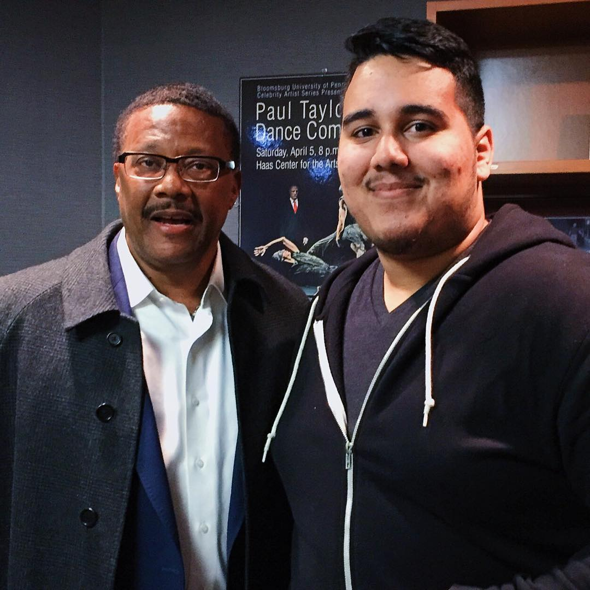

About
Background
I am: Talkative, Ambitious, Hard Working, Intuitive, Sympathetic, Passionate

Short Bio
I currently am attending Bloomsburg University Graduate Program for Instructional Technology Corporate Track. Bloomsburg University also served as the school for my undergraduate studies. After 4.5 years I was able to achieve a Bachelors of Science Degree in Digital Forensics. Among my time at Bloom I was also an employee of the Office of Multicultural Affairs. And assisted in the running of the Sankofa Conference and Breast Cancer Walk. My free time was spent doing local community service and as a leader in various student organizations.